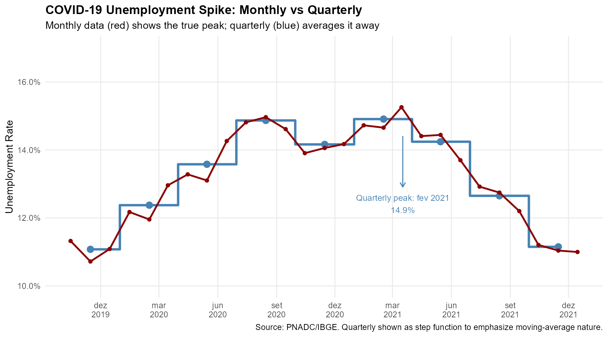
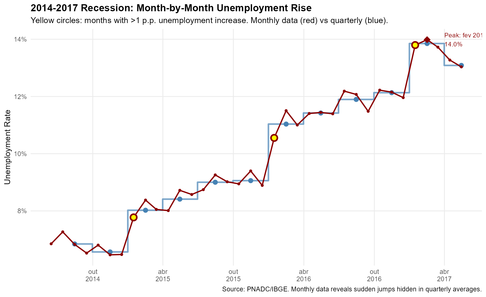
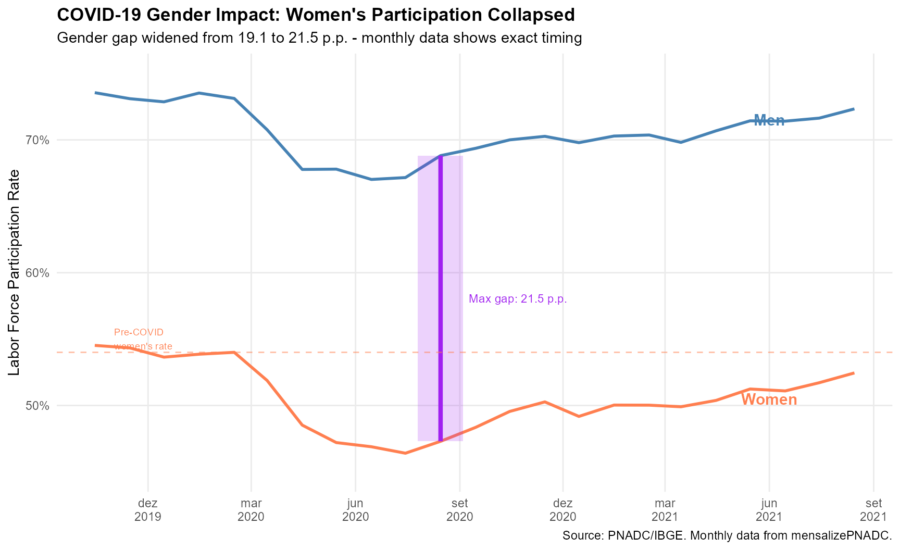
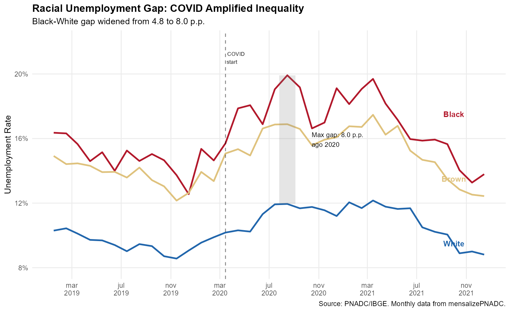
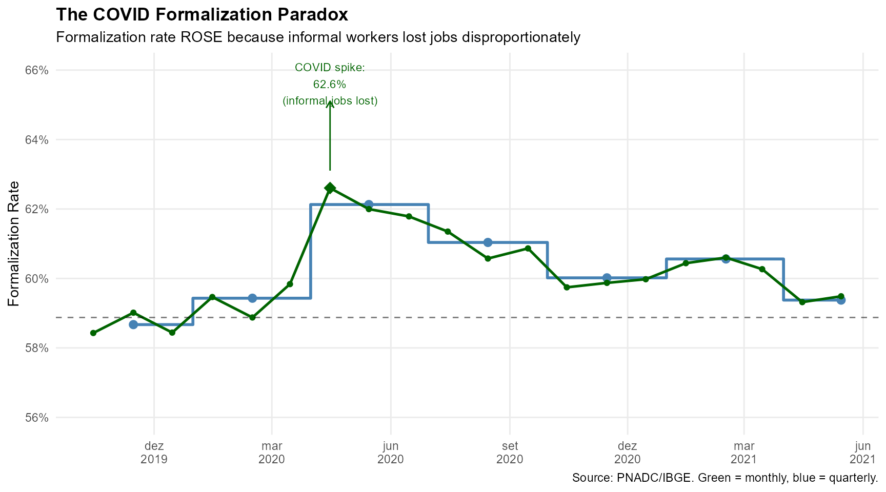

Applied Examples: Quarterly vs Monthly Labor Market Series
Source:vignettes/applied-examples.Rmd
applied-examples.RmdIntroduction
Quarterly labor market data from PNADC represents moving averages of monthly phenomena. This averaging smooths out short-term fluctuations, obscuring the precise timing of economic turning points and the true magnitude of shocks.
This vignette demonstrates how mensalizePNADC reveals
dynamics that quarterly data hides. We focus on specific periods and
comparisons where the difference is most striking.
library(data.table)
library(ggplot2)
library(scales)
# Load pre-computed series (included with package)
data("vignette_series", package = "mensalizePNADC")
# Prepare data
quarterly_total <- as.data.table(vignette_quarterly_total)
quarterly_gender <- as.data.table(vignette_quarterly_gender)
quarterly_race <- as.data.table(vignette_quarterly_race)
monthly_total <- as.data.table(vignette_monthly_total)
monthly_gender <- as.data.table(vignette_monthly_gender)
monthly_race <- as.data.table(vignette_monthly_race)
cat("Period:", vignette_metadata$period_start, "to", vignette_metadata$period_end, "\n")
#> Period: 2012-Q1 to 2025-Q3
cat("Determination rate:", sprintf("%.1f%%", vignette_metadata$determination_rate * 100), "\n")
#> Determination rate: 95.4%1. COVID-19: Revealing the True Shock
The COVID-19 pandemic caused the sharpest labor market shock in Brazilian history. But quarterly data understates the peak and delays the timing.
# Focus on COVID period
covid_q <- quarterly_total[period >= "2019-10-01" & period <= "2022-01-01"]
covid_m <- monthly_total[period >= "2019-10-01" & period <= "2022-01-01"]
# Find peaks
peak_quarterly <- covid_q[unemployment_rate == max(unemployment_rate)]
peak_monthly <- covid_m[unemployment_rate == max(unemployment_rate)]
ggplot() +
# Quarterly as step function (shows moving average nature)
geom_step(data = covid_q, aes(x = period, y = unemployment_rate),
color = "steelblue", linewidth = 1.2, direction = "mid") +
geom_point(data = covid_q, aes(x = period, y = unemployment_rate),
color = "steelblue", size = 3) +
# Monthly as line
geom_line(data = covid_m, aes(x = period, y = unemployment_rate),
color = "darkred", linewidth = 0.9) +
geom_point(data = covid_m, aes(x = period, y = unemployment_rate),
color = "darkred", size = 1.5) +
# Annotate peaks
annotate("segment", x = peak_monthly$period, xend = peak_monthly$period,
y = peak_monthly$unemployment_rate + 0.005,
yend = peak_monthly$unemployment_rate + 0.02,
arrow = arrow(length = unit(0.2, "cm")), color = "darkred") +
annotate("text", x = peak_monthly$period, y = peak_monthly$unemployment_rate + 0.022,
label = paste0("Monthly peak: ", format(peak_monthly$period, "%b %Y"), "\n",
sprintf("%.1f%%", peak_monthly$unemployment_rate * 100)),
size = 3.2, color = "darkred", hjust = 0.5) +
annotate("segment", x = peak_quarterly$period + 30, xend = peak_quarterly$period + 30,
y = peak_quarterly$unemployment_rate - 0.005,
yend = peak_quarterly$unemployment_rate - 0.02,
arrow = arrow(length = unit(0.2, "cm")), color = "steelblue") +
annotate("text", x = peak_quarterly$period + 30, y = peak_quarterly$unemployment_rate - 0.025,
label = paste0("Quarterly peak: ", format(peak_quarterly$period, "%b %Y"), "\n",
sprintf("%.1f%%", peak_quarterly$unemployment_rate * 100)),
size = 3.2, color = "steelblue", hjust = 0.5) +
scale_y_continuous(labels = percent_format(accuracy = 0.1),
limits = c(0.10, 0.17)) +
scale_x_date(date_breaks = "3 months", date_labels = "%b\n%Y") +
labs(
title = "COVID-19 Unemployment Spike: Monthly vs Quarterly",
subtitle = "Monthly data (red) shows the true peak; quarterly (blue) averages it away",
x = NULL, y = "Unemployment Rate",
caption = "Source: PNADC/IBGE. Quarterly shown as step function to emphasize moving-average nature."
) +
theme_minimal(base_size = 11) +
theme(
plot.title = element_text(face = "bold"),
panel.grid.minor = element_blank()
)
#> Warning: Removed 1 row containing missing values or values outside the scale range
#> (`geom_segment()`).
#> Warning: Removed 1 row containing missing values or values outside the scale range
#> (`geom_text()`).
Key findings:
- Monthly data shows unemployment peaked at 15.3% in março 2021
- Quarterly data shows a lower peak of 14.9% - understating the shock
- The quarterly “peak” appears later than the true monthly peak
2. The 2014-2017 Recession: Tracking the Deterioration
Brazil’s 2014-2017 recession saw unemployment rise from 6% to 14%. Monthly data reveals the month-by-month deterioration that quarterly data smooths.
# Focus on recession build-up
recession_q <- quarterly_total[period >= "2014-06-01" & period <= "2017-06-01"]
recession_m <- monthly_total[period >= "2014-06-01" & period <= "2017-06-01"]
# Find the peak
peak_m <- recession_m[unemployment_rate == max(unemployment_rate)]
# Calculate month-to-month changes for monthly
setorder(recession_m, period)
recession_m[, change := unemployment_rate - shift(unemployment_rate)]
big_jumps <- recession_m[!is.na(change) & change > 0.01]
ggplot() +
# Quarterly
geom_step(data = recession_q, aes(x = period, y = unemployment_rate),
color = "steelblue", linewidth = 1, direction = "mid", alpha = 0.7) +
geom_point(data = recession_q, aes(x = period, y = unemployment_rate),
color = "steelblue", size = 2.5) +
# Monthly
geom_line(data = recession_m, aes(x = period, y = unemployment_rate),
color = "darkred", linewidth = 0.8) +
geom_point(data = recession_m, aes(x = period, y = unemployment_rate),
color = "darkred", size = 1.2) +
# Highlight big monthly jumps
geom_point(data = big_jumps, aes(x = period, y = unemployment_rate),
color = "darkred", size = 3, shape = 21, fill = "yellow", stroke = 1.5) +
# Mark the peak
annotate("point", x = peak_m$period, y = peak_m$unemployment_rate,
color = "darkred", size = 4, shape = 18) +
annotate("text", x = peak_m$period + 45, y = peak_m$unemployment_rate,
label = paste0("Peak: ", format(peak_m$period, "%b %Y"), "\n",
sprintf("%.1f%%", peak_m$unemployment_rate * 100)),
size = 3, hjust = 0, color = "darkred") +
scale_y_continuous(labels = percent_format(accuracy = 1),
breaks = seq(0.06, 0.14, 0.02)) +
scale_x_date(date_breaks = "6 months", date_labels = "%b\n%Y") +
labs(
title = "2014-2017 Recession: Month-by-Month Unemployment Rise",
subtitle = "Yellow circles: months with >1 p.p. unemployment increase. Monthly data (red) vs quarterly (blue).",
x = NULL, y = "Unemployment Rate",
caption = "Source: PNADC/IBGE. Monthly data reveals sudden jumps hidden in quarterly averages."
) +
theme_minimal(base_size = 11) +
theme(
plot.title = element_text(face = "bold"),
panel.grid.minor = element_blank()
)
Key findings:
- Monthly data reveals 3 months with unemployment jumps exceeding 1 percentage point
- These sudden deteriorations are invisible in quarterly data
- The precise peak occurred in fevereiro 2017 at 14.0%
3. Gender Gap During COVID: Women Left the Labor Force
COVID-19 disproportionately affected women’s labor force participation due to school closures and care responsibilities. Monthly data captures the exact timing and magnitude of this divergence.
# Prepare gender data for COVID period
covid_gender_m <- monthly_gender[period >= "2019-10-01" & period <= "2021-09-01"]
covid_gender_q <- quarterly_gender[period >= "2019-10-01" & period <= "2021-09-01"]
# Calculate gender gap
gap_monthly <- dcast(covid_gender_m, period ~ sexo, value.var = "participation_rate")
gap_monthly[, gap := Men - Women]
setorder(gap_monthly, period)
# Find max gap
max_gap <- gap_monthly[gap == max(gap)]
# Pre-COVID baseline
baseline <- gap_monthly[period == "2020-02-15"]
ggplot() +
# Men - monthly
geom_line(data = covid_gender_m[sexo == "Men"],
aes(x = period, y = participation_rate),
color = "steelblue", linewidth = 1) +
# Women - monthly
geom_line(data = covid_gender_m[sexo == "Women"],
aes(x = period, y = participation_rate),
color = "coral", linewidth = 1) +
# Shade the gap at maximum point
annotate("rect",
xmin = max_gap$period - 20, xmax = max_gap$period + 20,
ymin = max_gap$Women, ymax = max_gap$Men,
fill = "purple", alpha = 0.2) +
annotate("segment",
x = max_gap$period, xend = max_gap$period,
y = max_gap$Women, yend = max_gap$Men,
color = "purple", linewidth = 1.5) +
annotate("text", x = max_gap$period + 25, y = (max_gap$Men + max_gap$Women) / 2,
label = paste0("Max gap: ", sprintf("%.1f p.p.", (max_gap$Men - max_gap$Women) * 100)),
size = 3, hjust = 0, color = "purple") +
# Labels
annotate("text", x = as.Date("2021-06-01"), y = 0.715, label = "Men",
color = "steelblue", fontface = "bold", size = 4) +
annotate("text", x = as.Date("2021-06-01"), y = 0.505, label = "Women",
color = "coral", fontface = "bold", size = 4) +
# Baseline reference
geom_hline(yintercept = baseline$Women, linetype = "dashed", color = "coral", alpha = 0.5) +
annotate("text", x = as.Date("2019-11-01"), y = baseline$Women + 0.01,
label = "Pre-COVID\nwomen's rate", size = 2.5, color = "coral", hjust = 0) +
scale_y_continuous(labels = percent_format(accuracy = 1),
limits = c(0.45, 0.75)) +
scale_x_date(date_breaks = "3 months", date_labels = "%b\n%Y") +
labs(
title = "COVID-19 Gender Impact: Women's Participation Collapsed",
subtitle = paste0("Gender gap widened from ", sprintf("%.1f", baseline$gap * 100),
" to ", sprintf("%.1f", max_gap$gap * 100),
" p.p. - monthly data shows exact timing"),
x = NULL, y = "Labor Force Participation Rate",
caption = "Source: PNADC/IBGE. Monthly data from mensalizePNADC."
) +
theme_minimal(base_size = 11) +
theme(
plot.title = element_text(face = "bold"),
panel.grid.minor = element_blank()
)
Key findings:
- Pre-COVID gender gap: 19.1 percentage points
- Maximum gap during COVID: 21.5 percentage points in agosto 2020
- Women’s participation dropped from 54.0% to 46.4%
- Monthly data pinpoints when the divergence began and when recovery started
4. Racial Inequality: Unemployment Gap Widened During COVID
The unemployment gap between Black and White workers widened significantly during the pandemic. Monthly data reveals when this happened.
# Prepare race data - focus on unemployment rate gap
race_unemp_m <- monthly_race[period >= "2019-01-01" & period <= "2022-01-01"]
race_unemp_q <- quarterly_race[period >= "2019-01-01" & period <= "2022-01-01"]
# Calculate gap (Black - White)
gap_race_m <- dcast(race_unemp_m, period ~ raca, value.var = "unemployment_rate")
gap_race_m[, gap := Black - White]
setorder(gap_race_m, period)
# Find max gap
max_race_gap <- gap_race_m[gap == max(gap, na.rm = TRUE)]
# Pre-COVID
baseline_race <- gap_race_m[period == "2020-02-15"]
ggplot() +
# White unemployment
geom_line(data = race_unemp_m[raca == "White"],
aes(x = period, y = unemployment_rate),
color = "#2166AC", linewidth = 1) +
# Black unemployment
geom_line(data = race_unemp_m[raca == "Black"],
aes(x = period, y = unemployment_rate),
color = "#B2182B", linewidth = 1) +
# Brown unemployment
geom_line(data = race_unemp_m[raca == "Brown"],
aes(x = period, y = unemployment_rate),
color = "#DFC27D", linewidth = 1) +
# Shade max gap period
annotate("rect",
xmin = max_race_gap$period - 20, xmax = max_race_gap$period + 20,
ymin = max_race_gap$White, ymax = max_race_gap$Black,
fill = "gray50", alpha = 0.2) +
# COVID start marker
geom_vline(xintercept = as.Date("2020-03-15"), linetype = "dashed", alpha = 0.5) +
annotate("text", x = as.Date("2020-03-15"), y = 0.21,
label = "COVID\nstart", size = 2.5, hjust = -0.1) +
# Labels
annotate("text", x = as.Date("2021-10-01"), y = 0.175, label = "Black",
color = "#B2182B", fontface = "bold", size = 3.5) +
annotate("text", x = as.Date("2021-10-01"), y = 0.135, label = "Brown",
color = "#DFC27D", fontface = "bold", size = 3.5) +
annotate("text", x = as.Date("2021-10-01"), y = 0.095, label = "White",
color = "#2166AC", fontface = "bold", size = 3.5) +
# Gap annotation
annotate("text", x = max_race_gap$period + 60, y = (max_race_gap$Black + max_race_gap$White) / 2,
label = paste0("Max gap: ", sprintf("%.1f p.p.", max_race_gap$gap * 100), "\n",
format(max_race_gap$period, "%b %Y")),
size = 3, hjust = 0) +
scale_y_continuous(labels = percent_format(accuracy = 1),
limits = c(0.08, 0.22)) +
scale_x_date(date_breaks = "4 months", date_labels = "%b\n%Y") +
labs(
title = "Racial Unemployment Gap: COVID Amplified Inequality",
subtitle = paste0("Black-White gap widened from ", sprintf("%.1f", baseline_race$gap * 100),
" to ", sprintf("%.1f", max_race_gap$gap * 100), " p.p."),
x = NULL, y = "Unemployment Rate",
caption = "Source: PNADC/IBGE. Monthly data from mensalizePNADC."
) +
theme_minimal(base_size = 11) +
theme(
plot.title = element_text(face = "bold"),
panel.grid.minor = element_blank()
)
Key findings:
- Pre-COVID Black-White gap: 4.8 percentage points
- Maximum gap: 8.0 percentage points in agosto 2020
- Black unemployment peaked at nearly 20% while White unemployment peaked at 12%
- Monthly data shows the gap widened immediately after COVID started and remained elevated
5. Formalization Rate: Detecting the “COVID Paradox”
During COVID, the formalization rate increased despite the economic collapse. Why? Informal workers lost jobs faster, changing the composition of employment.
# Focus on COVID period formalization
covid_form_m <- monthly_total[period >= "2019-10-01" & period <= "2021-06-01",
.(period, formalization_rate)]
covid_form_q <- quarterly_total[period >= "2019-10-01" & period <= "2021-06-01",
.(period, formalization_rate)]
# Find the spike
max_formal <- covid_form_m[formalization_rate == max(formalization_rate)]
pre_covid <- covid_form_m[period == "2020-02-15"]
ggplot() +
# Quarterly
geom_step(data = covid_form_q, aes(x = period, y = formalization_rate),
color = "steelblue", linewidth = 1, direction = "mid") +
geom_point(data = covid_form_q, aes(x = period, y = formalization_rate),
color = "steelblue", size = 2.5) +
# Monthly
geom_line(data = covid_form_m, aes(x = period, y = formalization_rate),
color = "darkgreen", linewidth = 0.9) +
geom_point(data = covid_form_m, aes(x = period, y = formalization_rate),
color = "darkgreen", size = 1.5) +
# Highlight the spike
annotate("point", x = max_formal$period, y = max_formal$formalization_rate,
color = "darkgreen", size = 4, shape = 18) +
annotate("segment", x = max_formal$period, xend = max_formal$period,
y = max_formal$formalization_rate + 0.005,
yend = max_formal$formalization_rate + 0.025,
arrow = arrow(length = unit(0.2, "cm")), color = "darkgreen") +
annotate("text", x = max_formal$period, y = max_formal$formalization_rate + 0.03,
label = paste0("COVID spike:\n", sprintf("%.1f%%", max_formal$formalization_rate * 100), "\n",
"(informal jobs lost)"),
size = 3, hjust = 0.5, color = "darkgreen") +
# Pre-COVID reference
geom_hline(yintercept = pre_covid$formalization_rate, linetype = "dashed", alpha = 0.5) +
scale_y_continuous(labels = percent_format(accuracy = 1),
limits = c(0.56, 0.66)) +
scale_x_date(date_breaks = "3 months", date_labels = "%b\n%Y") +
labs(
title = "The COVID Formalization Paradox",
subtitle = "Formalization rate ROSE because informal workers lost jobs disproportionately",
x = NULL, y = "Formalization Rate",
caption = "Source: PNADC/IBGE. Green = monthly, blue = quarterly."
) +
theme_minimal(base_size = 11) +
theme(
plot.title = element_text(face = "bold"),
panel.grid.minor = element_blank()
)
Key findings:
- Pre-COVID formalization: 58.9%
- COVID peak: 62.6% in abril 2020
- This 3.7 p.p. jump happened in a single month
- Monthly data captures this compositional shift that quarterly data smooths
Summary: What Monthly Data Reveals
| Analysis | Quarterly Limitation | Monthly Insight |
|---|---|---|
| COVID unemployment | Peak understated | True peak of 15.3% in mar 2021 |
| Recession build-up | Gradual rise appears smooth | 3 months with >1 p.p. jumps |
| Gender gap | Gap widening timing unclear | Exact month of divergence (ago 2020) |
| Racial inequality | Gap changes smoothed | 8.0 p.p. peak gap dated precisely |
| Formalization paradox | Spike diluted across quarter | Sharp compositional shift visible |
Monthly data from mensalizePNADC enables:
- Precise timing of economic turning points
- True magnitudes of shocks (not moving averages)
- Exact dating of policy-relevant changes
- Short-term dynamics invisible in quarterly data
Technical Notes
Data Source
The series shown here were computed from 22,850,046 PNADC observations covering 2012-Q1 to 2025-Q3.
The mensalization algorithm achieved a 95.4% determination rate, meaning nearly all observations could be assigned to specific months.
Reproduce These Results
library(mensalizePNADC)
library(data.table)
# Load your stacked PNADC data
pnadc <- fread("your_pnadc_stacked.csv")
# Apply mensalization with weight computation
result <- mensalizePNADC(pnadc, compute_weights = TRUE)
# Compute monthly unemployment rate
monthly_unemp <- result[!is.na(weight_monthly), .(
unemployment_rate = sum((VD4001 == 1 & VD4002 == 2) * weight_monthly) /
sum((VD4001 == 1) * weight_monthly)
), by = ref_month_yyyymm]See the Getting Started vignette for the complete algorithm explanation.
References
- IBGE. Pesquisa Nacional por Amostra de Domicilios Continua (PNADC). https://www.ibge.gov.br/estatisticas/sociais/trabalho/
- Hecksher, M. (2024). Mensalizacao da PNADC. Working paper.